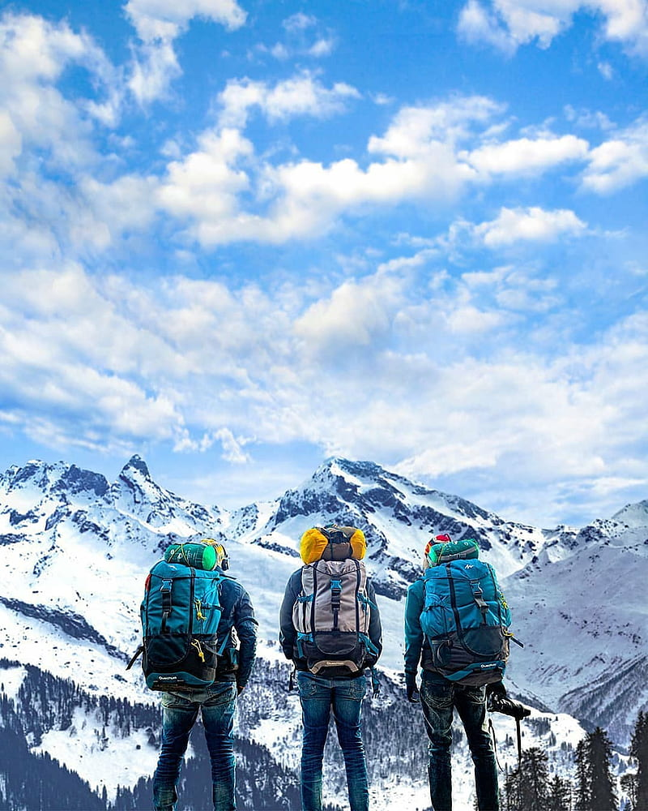
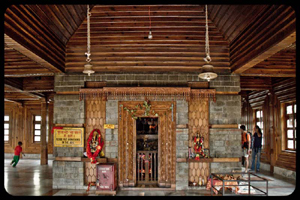
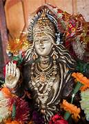
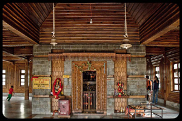
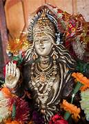

Solang Valley


Solang Valley, also known as Solang Nallah, is a picturesque valley located near Manali in the Indian state of Himachal Pradesh.
- Location: Solang Valley is situated approximately 14 kilometers northwest of Manali, along the Manali-Leh Highway. It lies between the villages of Palchan and Kothi.
- Scenic Beauty: The valley is renowned for its breathtaking natural beauty, with snow-capped mountains, lush greenery, and meandering streams surrounding it. Visitors can enjoy panoramic views of the Himalayan peaks, including Hanuman Tibba and Seven Sisters.
- Adventure Activities:
- Skiing
- Paragliding
- Zorbing
- Snowboarding
- Cable Car Ride
- Local Culture: In addition to adventure sports, Solang Valley offers visitors the opportunity to experience the local culture and hospitality of Himachal Pradesh.
- Accessibility: Solang Valley is easily accessible from Manali by road. Visitors can hire taxis, auto-rickshaws, or private vehicles to reach the valley.
- Accommodation: While there are limited accommodation options directly in Solang Valley, visitors can find a variety of hotels, guesthouses, and resorts in nearby Manali to suit their preferences and budget.
Overall, Solang Valley offers a perfect blend of natural beauty, adventure activities, and cultural experiences, making it a must-visit destination for travelers seeking thrill and relaxation amidst the stunning Himalayan landscapes of Himachal Pradesh.
 


